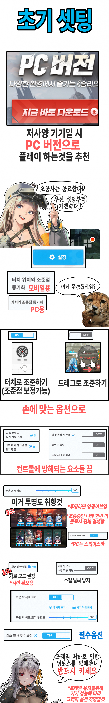
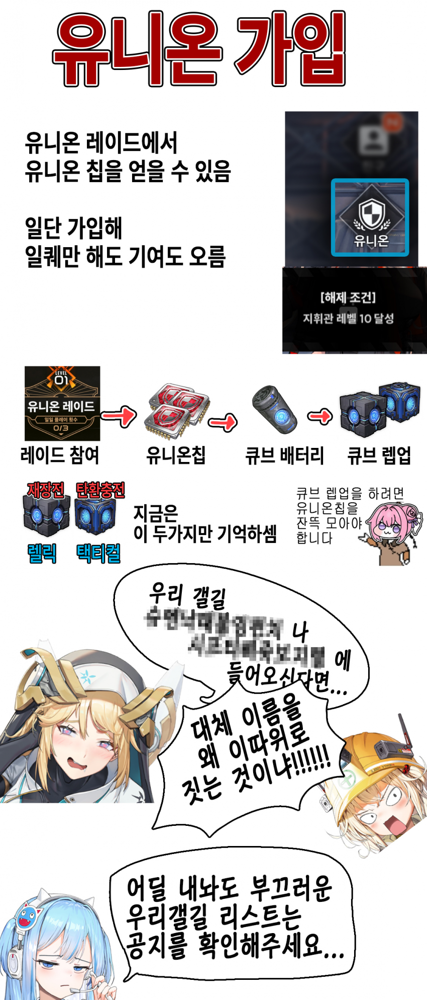
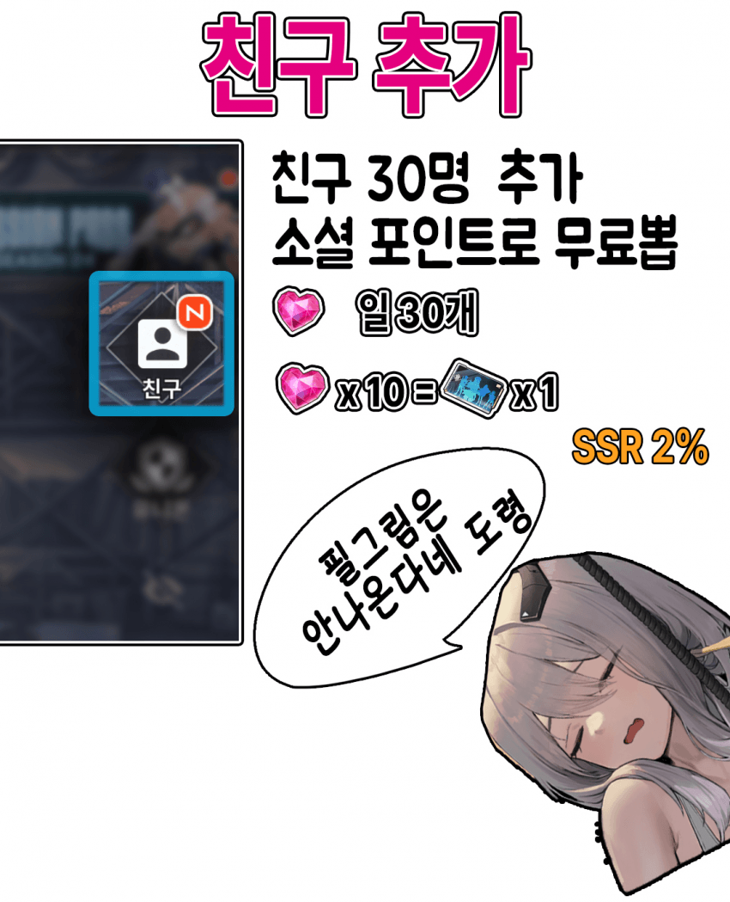

니케의 간단한 사전지식을
초벌로 구이해주는 초벌구이공략!!
지금 시작한 새내기 유저에
일류 셰프 도로롱이 제안하는
일등급 공략 오마카세 메뉴!!
설정, 세팅, 옵션

유니온 갤길 길드 유니온칩 길드 레이드

친구 우정 우뽑 소셜 소셜포인트

이 공략시리즈는 니케의 상식만 초벌해서 주는 니케 기본 상식 공략이며
과금공략, 초 고스펙 용 공략, 스테이지, 보스전 공략 등은
따로 찾아볼것!